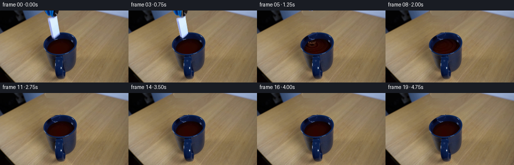
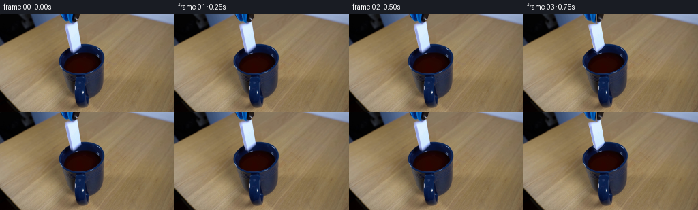
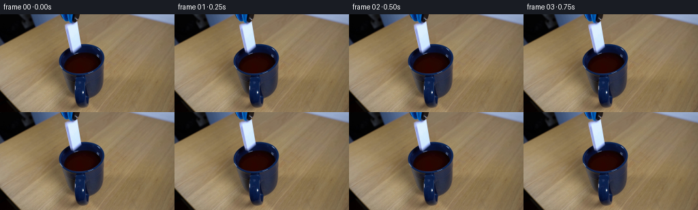

CODING AGENTS AS PIXEL WORLD MODELS
traex/GPT-6.1-Sol · 0048
点击播放 · 原生 RGB 像素
逐轮保存的候选
回放视频、检查图与代码变化。
每份候选均可单独播放。实际图片检查记录在下方工具轨迹中。
候选 01播放与检查图
点击播放 · 原生 RGB 像素

展开代码变化
--- 上一保存版本
+++ 本次保存版本
@@ -0,0 +1,233 @@
+from pathlib import Path
+import numpy as np
+import cv2
+from PIL import Image, ImageDraw
+from scipy.ndimage import gaussian_filter, distance_transform_edt
+import artifact_io
+
+ROOT=Path(__file__).resolve().parent
+W,H=256,144
+src=np.asarray(Image.open(ROOT/'first_frame.png').convert('RGB'))
+Y,X=np.mgrid[:H,:W].astype(np.float32)
+
+
+def polygon_mask(points, scale=4):
+ im=Image.new('L',(W*scale,H*scale),0)
+ ImageDraw.Draw(im).polygon([(round(x*scale),round(y*scale)) for x,y in points],fill=255)
+ return np.asarray(im.resize((W,H),Image.Resampling.LANCZOS)).astype(np.float32)/255
+
+# The two movable objects, identified from their RGB boundaries in the source.
+dom_poly=[(94.2,16.2),(96.2,14.4),(103.2,12.5),(111.8,10.5),
+ (113.6,11.2),(114.5,20.5),(118.9,43.7),(118.0,46.9),
+ (114.4,51.0),(109.2,54.9),(106.8,55.0),(103.1,51.3),
+ (101.3,43.0),(97.0,25.0)]
+tool_poly=[(88.3,-2),(117.5,-2),(116.1,4.5),(114.8,7.0),(113.9,10.3),
+ (111.4,12.6),(109.2,13.7),(105.2,13.7),(101.1,11.4),
+ (98.0,10.2),(94.2,8.7),(91.1,4.6)]
+geom=polygon_mask(dom_poly)
+bg_guess=src[:,np.clip(np.arange(W)+27,0,W-1)].astype(np.float32)
+# Account for the soft photographic boundary, including the cool ceramic bevel.
+a_blue=np.clip((src[:,:,2].astype(float)-bg_guess[:,:,2])/(249-bg_guess[:,:,2]+1e-5),0,1)
+interior=distance_transform_edt(geom>.48)>1.15
+dom_alpha=np.where(interior,1, a_blue)*geom
+# Remove pixels of the gripping jaw from the tile's top bevel.
+dom_alpha[(Y<13.3)&(X<110)]=0
+alpha=dom_alpha[...,None]
+dom_rgb=np.clip((src.astype(float)-(1-alpha)*bg_guess)/np.maximum(alpha,.04),0,255)
+dom_rgb[dom_alpha<.015]=0
+
+tool_alpha=polygon_mask(tool_poly)
+# Keep the original blue enamel, black jaws, and reflected lighting.
+tool_rgb=src.astype(np.float32)
+
+# Restore only the pixels formerly hidden by the moving objects.
+hole=((geom>.018)|(tool_alpha>.018)).astype(np.uint8)
+hole=cv2.dilate(hole,np.ones((3,3),np.uint8))
+clean=cv2.inpaint(src,hole*255,4,cv2.INPAINT_TELEA).astype(float)
+# Nearby wooden grain provides a stable, unlearned background estimate.
+# Fit the low-frequency colour between both sides of the hidden thin tile.
+for yy in range(0,44):
+ xx=np.where(hole[yy]>0)[0]
+ if not len(xx): continue
+ l,r=xx.min(),xx.max()
+ left=src[yy,max(72,l-8):max(73,l-2)].astype(float)
+ # The blue area at the top left is not table; use the unobscured right side there.
+ right=src[yy,r+3:r+14].astype(float)
+ lc=np.median(left,axis=0) if len(left) and yy>9 else np.median(right,axis=0)
+ rc=np.median(right,axis=0)
+ grain=src[yy,np.clip(xx+28,0,W-1)].astype(float)
+ grain-=gaussian_filter(src.astype(float),(.9,2,0))[yy,np.clip(xx+28,0,W-1)]
+ u=(xx-l+.5)/(r-l+1)
+ estimate=(1-u[:,None])*lc+u[:,None]*rc+grain*.6
+ clean[yy,xx]=estimate
+
+# Reconstruct the small far-rim segment hidden by the tile, following the
+# measured ellipse and the dark blue interior wall.
+angle=np.deg2rad(-16)
+xr=(X-119.6)*np.cos(angle)+(Y-65.7)*np.sin(angle)
+yr=-(X-119.6)*np.sin(angle)+(Y-65.7)*np.cos(angle)
+rho=np.sqrt((xr/33.8)**2+(yr/21.9)**2)
+replacement=np.zeros_like(clean)
+for yy in range(43,59):
+ for xx in range(98,122):
+ if not hole[yy,xx]: continue
+ rr=float(rho[yy,xx])
+ # Broad blue ceramic lip around the opening and dim inner wall.
+ if rr<=1.025:
+ edge=np.exp(-((rr-.967)/.056)**2)
+ wall=np.exp(-((rr-.84)/.08)**2)
+ col=np.array([8.,19.,54.])+edge*np.array([34.,42.,53.])+wall*np.array([1.,3.,6.])
+ sample=src[yy,min(151,xx+18)].astype(float)
+ col+=.22*(sample-gaussian_filter(src.astype(float),(1,2,0))[yy,min(151,xx+18)])
+ clean[yy,xx]=np.clip(col,0,255)
+# Feather restoration into the original by the precise moving-object footprint.
+restore=np.maximum(geom,tool_alpha)
+restore=cv2.dilate(restore,np.ones((3,3),np.uint8))
+restore=gaussian_filter(restore,.45)
+restore=np.clip(restore*1.16,0,1)
+base=src.astype(float)*(1-restore[:,:,None])+clean*restore[:,:,None]
+
+# Exact liquid boundary, leaving all ceramic and its front occlusion unchanged.
+liquid=((src[:,:,0]>src[:,:,2]+7)&(src[:,:,0]>src[:,:,1]*1.5)&
+ (src[:,:,0]<60)&(X>85)&(X<152)&(Y>52)&(Y<92)).astype(np.uint8)
+liquid=cv2.morphologyEx(liquid,cv2.MORPH_CLOSE,np.ones((3,3),np.uint8))
+liquid=cv2.GaussianBlur(liquid.astype(float),(0,0),.4)
+# Coordinates in the horizontal liquid plane (vertical is foreshortened).
+impact=np.array([109.,68.3])
+px=X-impact[0]
+py=(Y-impact[1])*1.87
+rad=np.sqrt(px*px+py*py)
+phi=np.arctan2(py,px)
+
+
+def warp_layer(rgb,a,dy=0,dx=0,turn=0,pivot=(107.,33.)):
+ m=cv2.getRotationMatrix2D(pivot,turn,1)
+ m[:,2]+=[dx,dy]
+ ap=cv2.warpAffine(a.astype(np.float32),m,(W,H),flags=cv2.INTER_LINEAR)
+ premul=cv2.warpAffine((rgb*a[:,:,None]).astype(np.float32),m,(W,H),flags=cv2.INTER_LINEAR)
+ return premul,ap
+
+def composite(frame,premul,a):
+ return frame*(1-a[:,:,None])+premul
+
+
+def surface(frame,t):
+ s=t-1.005
+ if s<=0: return frame
+ # Outward-moving waves, with multiple reflections off the mug wall.
+ decay=np.exp(-s/1.05)
+ phase=rad*.69-12*s
+ travel=31*s
+ envelope=np.exp(-((rad-travel)/7.0)**2)
+ wave=np.sin(phase)*envelope
+ reflected=np.sin(rad*.55+9.5*s+phi*.3)*np.exp(-((rad-(58-travel))/13.)**2)
+ wave+=.38*reflected
+ wave+=.22*np.sin(rad*.56-10*s)*np.exp(-s/.9)
+ highlight=np.maximum(0,np.cos(phase))**10*envelope
+ directional=.45+.55*np.maximum(0,np.sin(phi-.8))
+ rgbdelta=decay*(wave[:,:,None]*np.array([12.,9.,8.])+highlight[:,:,None]*directional[:,:,None]*np.array([57.,45.,36.]))
+ # Reflections change as tiny surface facets tilt into the fixed illumination.
+ speck=np.maximum(0,np.sin(rad*.78-13.1*s+phi*.9))**18
+ rgbdelta+=speck[:,:,None]*decay*np.array([9.,10.,13.])
+ frame=frame+rgbdelta*liquid[:,:,None]
+ return np.clip(frame,0,255)
+
+
+def splash(frame,t):
+ s=t-1.005
+ if s<-.02 or s> .75: return frame
+ S=4
+ canvas=Image.new('RGBA',(W*S,H*S),(0,0,0,0))
+ d=ImageDraw.Draw(canvas)
+ def poly(pts,fill):
+ d.polygon([(round(x*S),round(y*S)) for x,y in pts], fill=fill)
+ def line(pts,fill,width=1):
+ d.line([(round(x*S),round(y*S)) for x,y in pts],fill=fill,width=max(1,round(width*S)),joint='curve')
+ def dot(x,y,r,fill):
+ d.ellipse(((x-r)*S,(y-r)*S,(x+r)*S,(y+r)*S),fill=fill)
+ # Low crown plus a handful of narrow jets; never an exaggerated overflow.
+ if 0<=s<.4:
+ pulse=np.sin(np.pi*np.clip((s+.025)/.43,0,1))**1.15
+ height=8.4*pulse
+ spread=4+12*s
+ pts=[]
+ for j in range(23):
+ a=j/22*np.pi
+ xx=impact[0]+spread*np.cos(a)
+ yy=impact[1]+2.1*np.sin(a)
+ crown=(.5+.5*np.sin(a*9+.7)**4)*height
+ pts.append((xx,yy-crown))
+ poly(pts+[(impact[0]-spread,impact[1]+2),(impact[0]+spread,impact[1]+2)],(48,20,10,180))
+ line(pts,(110,73,50,185),.65)
+ # Central impact trough and a warm wet highlight around its edge.
+ d.ellipse(((impact[0]-4)*S,(impact[1]-1.6)*S,(impact[0]+5)*S,(impact[1]+2.7)*S),fill=(17,4,3,190))
+ line([(impact[0]-4,impact[1]+1),(impact[0]-1,impact[1]+2.4),(impact[0]+4,impact[1]+1.7)],(93,52,30,175),.5)
+ if s>=0:
+ # Analytic ballistic droplets, entirely inside the apparatus.
+ for j in range(7):
+ vx=[-18,-12,-5,7,15,21,2][j]
+ vy=[-29,-36,-23,-35,-27,-20,-41][j]
+ birth=[0,.02,.015,0,.01,.025,.02][j]
+ q=s-birth
+ if q<=0: continue
+ xx=impact[0]+vx*q
+ yy=impact[1]+vy*q+69*q*q
+ if yy>impact[1]+4: continue
+ rr=[.57,.68,.43,.62,.46,.5,.62][j]*(1-.27*q)
+ dot(xx,yy,rr,(49,22,10,230))
+ dot(xx-.13,yy-.2,rr*.42,(137,101,70,210))
+ layer=np.asarray(canvas.resize((W,H),Image.Resampling.LANCZOS)).astype(float)
+ # Splash can rise in front of the far wall but not cover the front cup body.
+ layer[:,:,3]*=np.clip((84-Y)/2,0,1)
+ a=layer[:,:,3:4]/255
+ return frame*(1-a)+layer[:,:,:3]*a
+
+
+def make_frame(i):
+ t=i/4
+ if i<=2:return src.copy()
+ out=base.copy()
+ out=surface(out,t)
+ # Release just before the one-second sample: a short, accelerating fall.
+ release=.906
+ elapsed=max(0,t-release)
+ dy=.25+ .5*3400*elapsed*elapsed
+ if t<release: dy=0
+ if dy<85:
+ # A short shutter interval gives natural blur to the free-falling tile.
+ samples=5 if elapsed>0 else 1
+ pm=np.zeros((H,W,3),np.float32); a=np.zeros((H,W),np.float32)
+ for offset in np.linspace(-.017,.017,samples) if samples>1 else [0]:
+ e=max(0,t+offset-release)
+ dd=.25+.5*3400*e*e if e>0 else 0
+ p,aa=warp_layer(dom_rgb,dom_alpha,dd,elapsed*4,turn=-elapsed*21)
+ # The lower end passes through the opaque liquid, with no tile
+ # shining through the coffee or the mug's near wall.
+ surface_y=68.5+.065*(X-109)
+ immersion=np.clip((surface_y-Y)/1.2,0,1)
+ if dd>8:
+ # Vertical section above the liquid and the rear rim is visible.
+ aa*=immersion;p*=immersion[:,:,None]
+ pm+=p/samples;a+=aa/samples
+ out=composite(out,pm,a)
+ # Jaws open at the release, then the tool withdraws vertically out of shot.
+ withdraw=0 if t<.875 else 34*(t-.875)
+ opening=.8 if t>=.75 else 0
+ for side in [0,1]:
+ am=tool_alpha*(X<107 if side==0 else X>=107)
+ shift=(-opening if side==0 else opening)
+ p,a=warp_layer(tool_rgb,am,dy=-withdraw-.35,dx=shift,pivot=(104,2))
+ out=composite(out,p,a)
+ out=splash(out,t)
+ return np.clip(np.rint(out),0,255).astype(np.uint8)
+
+
+def main():
+ frames=np.stack([make_frame(i) for i in range(20)])
+ assert np.array_equal(frames[0],src)
+ (ROOT/'.tmp').mkdir(exist_ok=True)
+ Image.fromarray(np.uint8(np.clip(base,0,255))).save(ROOT/'.tmp'/'background.png')
+ np.save(ROOT/'.tmp'/'candidate_frames.npy',frames)
+ artifact_io.save(frames,ROOT)
+
+if __name__=='__main__':main()
候选 02播放与检查图
点击播放 · 原生 RGB 像素


展开代码变化
--- 上一保存版本
+++ 本次保存版本
@@ -185,7 +185,7 @@
def make_frame(i):
t=i/4
- if i<=2:return src.copy()
+ if i<=3:return src.copy()
out=base.copy()
out=surface(out,t)
# Release just before the one-second sample: a short, accelerating fall.
@@ -210,13 +210,13 @@
aa*=immersion;p*=immersion[:,:,None]
pm+=p/samples;a+=aa/samples
out=composite(out,pm,a)
- # Jaws open at the release, then the tool withdraws vertically out of shot.
- withdraw=0 if t<.875 else 34*(t-.875)
- opening=.8 if t>=.75 else 0
+ # The gripper remains held steady after opening: no extra action is needed.
+ withdraw=0
+ opening=.65 if t>=release else 0
for side in [0,1]:
am=tool_alpha*(X<107 if side==0 else X>=107)
shift=(-opening if side==0 else opening)
- p,a=warp_layer(tool_rgb,am,dy=-withdraw-.35,dx=shift,pivot=(104,2))
+ p,a=warp_layer(tool_rgb,am,dy=-withdraw,dx=shift,pivot=(104,2))
out=composite(out,p,a)
out=splash(out,t)
return np.clip(np.rint(out),0,255).astype(np.uint8)
候选 03播放与检查图
点击播放 · 原生 RGB 像素

展开代码变化
代码未变化；重新保存了产物。
候选 04播放与检查图
点击播放 · 原生 RGB 像素

展开代码变化
--- 上一保存版本
+++ 本次保存版本
@@ -38,12 +38,17 @@
tool_alpha=polygon_mask(tool_poly)
# Keep the original blue enamel, black jaws, and reflected lighting.
-tool_rgb=src.astype(np.float32)
+tool_rgb=src.astype(np.float32).copy()
+# The tip of the ceramic overlaps the jaw in the initial photograph.
+# Do not attach that tiny white highlight to the empty gripper.
+ceramic_tip=(Y>9)&(src[:,:,0]>145)&(src[:,:,2]>190)&(X>104)&(X<116)
+tool_rgb[ceramic_tip]=[34,33,44]
# Restore only the pixels formerly hidden by the moving objects.
hole=((geom>.018)|(tool_alpha>.018)).astype(np.uint8)
hole=cv2.dilate(hole,np.ones((3,3),np.uint8))
clean=cv2.inpaint(src,hole*255,4,cv2.INPAINT_TELEA).astype(float)
+source_low=gaussian_filter(src.astype(float),(.9,2,0))
# Nearby wooden grain provides a stable, unlearned background estimate.
# Fit the low-frequency colour between both sides of the hidden thin tile.
for yy in range(0,44):
@@ -56,7 +61,7 @@
lc=np.median(left,axis=0) if len(left) and yy>9 else np.median(right,axis=0)
rc=np.median(right,axis=0)
grain=src[yy,np.clip(xx+28,0,W-1)].astype(float)
- grain-=gaussian_filter(src.astype(float),(.9,2,0))[yy,np.clip(xx+28,0,W-1)]
+ grain-=source_low[yy,np.clip(xx+28,0,W-1)]
u=(xx-l+.5)/(r-l+1)
estimate=(1-u[:,None])*lc+u[:,None]*rc+grain*.6
clean[yy,xx]=estimate
@@ -78,7 +83,7 @@
wall=np.exp(-((rr-.84)/.08)**2)
col=np.array([8.,19.,54.])+edge*np.array([34.,42.,53.])+wall*np.array([1.,3.,6.])
sample=src[yy,min(151,xx+18)].astype(float)
- col+=.22*(sample-gaussian_filter(src.astype(float),(1,2,0))[yy,min(151,xx+18)])
+ col+=.22*(sample-source_low[yy,min(151,xx+18)])
clean[yy,xx]=np.clip(col,0,255)
# Feather restoration into the original by the precise moving-object footprint.
restore=np.maximum(geom,tool_alpha)
@@ -197,7 +202,7 @@
# A short shutter interval gives natural blur to the free-falling tile.
samples=5 if elapsed>0 else 1
pm=np.zeros((H,W,3),np.float32); a=np.zeros((H,W),np.float32)
- for offset in np.linspace(-.017,.017,samples) if samples>1 else [0]:
+ for offset in np.linspace(-.011,.011,samples) if samples>1 else [0]:
e=max(0,t+offset-release)
dd=.25+.5*3400*e*e if e>0 else 0
p,aa=warp_layer(dom_rgb,dom_alpha,dd,elapsed*4,turn=-elapsed*21)
候选 05播放与检查图
可观测工具轨迹
实际执行的命令与返回图片。
命令 1exit 0
/bin/bash -lc 'ls -la && cat prompt.txt && cat GENERATION_RULES.md'
命令 2exit 0
/bin/bash -lc "cat artifact_io.py && python - <<'PY'
from PIL import Image
import numpy as np
im=np.array(Image.open('first_frame.png'));print(im.shape)
for y in range(0,144,4):
s=''
for x in range(0,256,4):
r,g,b=im[y:y+4,x:x+4].mean((0,1))
if max(r,g,b)<35:c='@'
elif b>r*1.25 and b>g*1.03:c='B'
elif min(r,g,b)>185:c='W'
elif r>g*1.25 and r>b*1.3:c='o'
elif max(r,g,b)-min(r,g,b)<30:c='.' if r>100 else '#'
else:c=':'
s+=c
print(f'{y:03d} {s}')
PY"命令 3exit 0
/bin/bash -lc "python - <<'PY'
from PIL import Image
import numpy as np
from collections import Counter
im=np.array(Image.open('first_frame.png'))
# indexed nearest color atlas
colors={' ': (200,145,97),'.':(166,113,69),':':(110,78,47),'~':(112,148,167),'b':(41,87,123),'B':(22,54,78),'D':(12,30,38),'#':(13,16,19),'w':(212,218,219),'W':(240,241,239),'g':(134,143,145),'r':(69,41,24)}
cs=np.array(list(colors.values()));names=list(colors)
for y in range(0,95,2):
s=''
for x in range(60,162):
rgb=im[y:y+2,x].mean(0);k=np.argmin(((cs-rgb)**2).sum(1));s+=names[k]
print(f'{y:03d}|{s}|')
print('RGB horizontal lines')
for y in [0,5,10,15,18,20,25,30,40,45,50,55,60,65,70,75,80,85,90,100,120,133]:
print(y,[(x,im[y,x].tolist()) for x in range(86,147,3)])
PY"命令 4exit 0
/bin/bash -lc "python - <<'PY'
import importlib.util
for a in ['numpy','PIL','scipy','cv2']:
print(a, bool(importlib.util.find_spec(a)))
from PIL import Image
import numpy as np
im=np.array(Image.open('first_frame.png'))
for y in range(0,60):
s=''
for x in range(0,124,2):
r,g,b=im[y,x].astype(float)
if r>165 and b>r+12 and g>165:c='W'
elif b>r+20 and g>r+5:c='b' if g>75 else 'B'
elif r<50 and g<50 and b<65:c='#'
elif b>r+8:c='g'
else:c='.'
s+=c
print(f'{y:02d} {s}')
# bounds bright ceramic
for y in range(7,59):
mask=(im[y,:,2].astype(float)>im[y,:,0]+15)&(im[y,:,0]>140)&(np.arange(256)>90)&(np.arange(256)<124)
a=np.where(mask)[0]
if len(a): print('domino',y,int(a.min()),int(a.max()))
PY"命令 5exit 0
/bin/bash -lc "python - <<'PY'
from PIL import Image
import numpy as np
im=np.array(Image.open('first_frame.png'))
for y in [0,5,10,15,20,25,30,35,40,45,50,55,60]:
print(y,[(x,im[y,x].tolist()) for x in range(0,101,10)])
print('domino close')
for y in range(8,57):
s=''
for x in range(90,122):
r,g,b=im[y,x].astype(float)
if r>195 and g>210:c='W'
elif r>160 and b>r+15:c='w'
elif r>135 and b>r+15:c='g'
elif b>r+25:c='b'
elif r<60:c='#'
else:c='.'
s+=c
print(f'{y:02d} {s}')
PY"命令 6exit 0
/bin/bash -lc "python - <<'PY'
from PIL import Image
import numpy as np
im=np.array(Image.open('first_frame.png'))
for y in range(0,18):
print(y,[(x,im[y,x].tolist()) for x in range(85,118)])
PY"命令 7exit 0
/bin/bash -lc "python - <<'PY'
from PIL import Image
import numpy as np
im=np.array(Image.open('first_frame.png')); y,x=np.mgrid[:144,:256]
m=(im[:,:,0]>im[:,:,2]+7)&(im[:,:,0]>im[:,:,1]*1.5)&(im[:,:,0]<60)&(x>85)&(x<152)&(y>52)&(y<92)
for yy in range(53,92):
a=np.where(m[yy])[0]
if len(a):print(yy,a.min(),a.max())
print('table means')
for yy in range(0,51,2):
print(yy,im[yy,120:140].mean(0),im[yy,155:230].mean(0),im[yy,70:90].mean(0))
PY"命令 8exit 0
/bin/bash -lc "python - <<'PY'
import cv2
from PIL import Image
import numpy as np
im=np.array(Image.open('first_frame.png'));y,x=np.mgrid[:144,:256]
m=(im[:,:,0]>im[:,:,2]+7)&(im[:,:,0]>im[:,:,1]*1.5)&(im[:,:,0]<60)&(x>85)&(x<152)&(y>52)&(y<92)
a=cv2.findContours(m.astype('uint8'),cv2.RETR_EXTERNAL,cv2.CHAIN_APPROX_NONE)[0]; c=max(a,key=cv2.contourArea)
print('liquid',cv2.fitEllipse(c));
# Per row min/max blue position for opening
m2=(im[:,:,2]>im[:,:,0]+9)&(im[:,:,2]>im[:,:,1]+12)&(im[:,:,0]<115)&(x>78)&(x<159)&(y>40)&(y<91)
for yy in range(41,91):
a=np.where(m2[yy])[0]
if len(a):print(yy, a.min(),a.max())
PY"命令 9exit 0
/bin/bash -lc "cat > generate.py <<'PY'
from pathlib import Path
import numpy as np
import cv2
from PIL import Image, ImageDraw
from scipy.ndimage import gaussian_filter, distance_transform_edt
import artifact_io
ROOT=Path(__file__).resolve().parent
W,H=256,144
src=np.asarray(Image.open(ROOT/'first_frame.png').convert('RGB'))
Y,X=np.mgrid[:H,:W].astype(np.float32)
def polygon_mask(points, scale=4):
im=Image.new('L',(W*scale,H*scale),0)
ImageDraw.Draw(im).polygon([(round(x*scale),round(y*scale)) for x,y in points],fill=255)
return np.asarray(im.resize((W,H),Image.Resampling.LANCZOS)).astype(np.float32)/255
# The two movable objects, identified from their RGB boundaries in the source.
dom_poly=[(94.2,16.2),(96.2,14.4),(103.2,12.5),(111.8,10.5),
(113.6,11.2),(114.5,20.5),(118.9,43.7),(118.0,46.9),
(114.4,51.0),(109.2,54.9),(106.8,55.0),(103.1,51.3),
(101.3,43.0),(97.0,25.0)]
tool_poly=[(88.3,-2),(117.5,-2),(116.1,4.5),(114.8,7.0),(113.9,10.3),
(111.4,12.6),(109.2,13.7),(105.2,13.7),(101.1,11.4),
(98.0,10.2),(94.2,8.7),(91.1,4.6)]
geom=polygon_mask(dom_poly)
bg_guess=src[:,np.clip(np.arange(W)+27,0,W-1)].astype(np.float32)
# Account for the soft photographic boundary, including the cool ceramic bevel.
a_blue=np.clip((src[:,:,2].astype(float)-bg_guess[:,:,2])/(249-bg_guess[:,:,2]+1e-5),0,1)
interior=distance_transform_edt(geom>.48)>1.15
dom_alpha=np.where(interior,1, a_blue)*geom
# Remove pixels of the gripping jaw from the tile's top bevel.
dom_alpha[(Y<13.3)&(X<110)]=0
alpha=dom_alpha[...,None]
dom_rgb=np.clip((src.astype(float)-(1-alpha)*bg_guess)/np.maximum(alpha,.04),0,255)
dom_rgb[dom_alpha<.015]=0
tool_alpha=polygon_mask(tool_poly)
# Keep the original blue enamel, black jaws, and reflected lighting.
tool_rgb=src.astype(np.float32)
# Restore only the pixels formerly hidden by the moving objects.
hole=((geom>.018)|(tool_alpha>.018)).astype(np.uint8)
hole=cv2.dilate(hole,np.ones((3,3),np.uint8))
clean=cv2.inpaint(src,hole*255,4,cv2.INPAINT_TELEA).astype(float)
# Nearby wooden grain provides a stable, unlearned background estimate.
# Fit the low-frequency colour between both sides of the hidden thin tile.
for yy in range(0,44):
xx=np.where(hole[yy]>0)[0]
if not len(xx): continue
l,r=xx.min(),xx.max()
left=src[yy,max(72,l-8):max(73,l-2)].astype(float)
# The blue area at the top left is not table; use the unobscured right side there.
right=src[yy,r+3:r+14].astype(float)
lc=np.median(left,axis=0) if len(left) and yy>9 else np.median(right,axis=0)
rc=np.median(right,axis=0)
grain=src[yy,np.clip(xx+28,0,W-1)].astype(float)
grain-=gaussian_filter(src.astype(float),(.9,2,0))[yy,np.clip(xx+28,0,W-1)]
u=(xx-l+.5)/(r-l+1)
estimate=(1-u[:,None])*lc+u[:,None]*rc+grain*.6
clean[yy,xx]=estimate
# Reconstruct the small far-rim segment hidden by the tile, following the
# measured ellipse and the dark blue interior wall.
angle=np.deg2rad(-16)
xr=(X-119.6)*np.cos(angle)+(Y-65.7)*np.sin(angle)
yr=-(X-119.6)*np.sin(angle)+(Y-65.7)*np.cos(angle)
rho=np.sqrt((xr/33.8)**2+(yr/21.9)**2)
replacement=np.zeros_like(clean)
for yy in range(43,59):
for xx in range(98,122):
if not hole[yy,xx]: continue
rr=float(rho[yy,xx])
# Broad blue ceramic lip around the opening and dim inner wall.
if rr<=1.025:
edge=np.exp(-((rr-.967)/.056)**2)
wall=np.exp(-((rr-.84)/.08)**2)
col=np.array([8.,19.,54.])+edge*np.array([34.,42.,53.])+wall*np.array([1.,3.,6.])
sample=src[yy,min(151,xx+18)].astype(float)
col+=.22*(sample-gaussian_filter(src.astype(float),(1,2,0))[yy,min(151,xx+18)])
clean[yy,xx]=np.clip(col,0,255)
# Feather restoration into the original by the precise moving-object footprint.
restore=np.maximum(geom,tool_alpha)
restore=cv2.dilate(restore,np.ones((3,3),np.uint8))
restore=gaussian_filter(restore,.45)
restore=np.clip(restore*1.16,0,1)
base=src.astype(float)*(1-restore[:,:,None])+clean*restore[:,:,None]
# Exact liquid boundary, leaving all ceramic and its front occlusion unchanged.
liquid=((src[:,:,0]>src[:,:,2]+7)&(src[:,:,0]>src[:,:,1]*1.5)&
(src[:,:,0]<60)&(X>85)&(X<152)&(Y>52)&(Y<92)).astype(np.uint8)
liquid=cv2.morphologyEx(liquid,cv2.MORPH_CLOSE,np.ones((3,3),np.uint8))
liquid=cv2.GaussianBlur(liquid.astype(float),(0,0),.4)
# Coordinates in the horizontal liquid plane (vertical is foreshortened).
impact=np.array([109.,68.3])
px=X-impact[0]
py=(Y-impact[1])*1.87
rad=np.sqrt(px*px+py*py)
phi=np.arctan2(py,px)
def warp_layer(rgb,a,dy=0,dx=0,turn=0,pivot=(107.,33.)):
m=cv2.getRotationMatrix2D(pivot,turn,1)
m[:,2]+=[dx,dy]
ap=cv2.warpAffine(a.astype(np.float32),m,(W,H),flags=cv2.INTER_LINEAR)
premul=cv2.warpAffine((rgb*a[:,:,None]).astype(np.float32),m,(W,H),flags=cv2.INTER_LINEAR)
return premul,ap
def composite(frame,premul,a):
return frame*(1-a[:,:,None])+premul
def surface(frame,t):
s=t-1.005
if s<=0: return frame
# Outward-moving waves, with multiple reflections off the mug wall.
decay=np.exp(-s/1.05)
phase=rad*.69-12*s
travel=31*s
envelope=np.exp(-((rad-travel)/7.0)**2)
wave=np.sin(phase)*envelope
reflected=np.sin(rad*.55+9.5*s+phi*.3)*np.exp(-((rad-(58-travel))/13.)**2)
wave+=.38*reflected
wave+=.22*np.sin(rad*.56-10*s)*np.exp(-s/.9)
highlight=np.maximum(0,np.cos(phase))**10*envelope
directional=.45+.55*np.maximum(0,np.sin(phi-.8))
rgbdelta=decay*(wave[:,:,None]*np.array([12.,9.,8.])+highlight[:,:,None]*directional[:,:,None]*np.array([57.,45.,36.]))
# Reflections change as tiny surface facets tilt into the fixed illumination.
speck=np.maximum(0,np.sin(rad*.78-13.1*s+phi*.9))**18
rgbdelta+=speck[:,:,None]*decay*np.array([9.,10.,13.])
frame=frame+rgbdelta*liquid[:,:,None]
return np.clip(frame,0,255)
def splash(frame,t):
s=t-1.005
if s<-.02 or s> .75: return frame
S=4
canvas=Image.new('RGBA',(W*S,H*S),(0,0,0,0))
d=ImageDraw.Draw(canvas)
def poly(pts,fill):
d.polygon([(round(x*S),round(y*S)) for x,y in pts], fill=fill)
def line(pts,fill,width=1):
d.line([(round(x*S),round(y*S)) for x,y in pts],fill=fill,width=max(1,round(width*S)),joint='curve')
def dot(x,y,r,fill):
d.ellipse(((x-r)*S,(y-r)*S,(x+r)*S,(y+r)*S),fill=fill)
# Low crown plus a handful of narrow jets; never an exaggerated overflow.
if 0<=s<.4:
pulse=np.sin(np.pi*np.clip((s+.025)/.43,0,1))**1.15
height=8.4*pulse
spread=4+12*s
pts=[]
for j in range(23):
a=j/22*np.pi
xx=impact[0]+spread*np.cos(a)
yy=impact[1]+2.1*np.sin(a)
crown=(.5+.5*np.sin(a*9+.7)**4)*height
pts.append((xx,yy-crown))
poly(pts+[(impact[0]-spread,impact[1]+2),(impact[0]+spread,impact[1]+2)],(48,20,10,180))
line(pts,(110,73,50,185),.65)
# Central impact trough and a warm wet highlight around its edge.
d.ellipse(((impact[0]-4)*S,(impact[1]-1.6)*S,(impact[0]+5)*S,(impact[1]+2.7)*S),fill=(17,4,3,190))
line([(impact[0]-4,impact[1]+1),(impact[0]-1,impact[1]+2.4),(impact[0]+4,impact[1]+1.7)],(93,52,30,175),.5)
if s>=0:
# Analytic ballistic droplets, entirely inside the apparatus.
for j in range(7):
vx=[-18,-12,-5,7,15,21,2][j]
vy=[-29,-36,-23,-35,-27,-20,-41][j]
birth=[0,.02,.015,0,.01,.025,.02][j]
q=s-birth
if q<=0: continue
xx=impact[0]+vx*q
yy=impact[1]+vy*q+69*q*q
if yy>impact[1]+4: continue
rr=[.57,.68,.43,.62,.46,.5,.62][j]*(1-.27*q)
dot(xx,yy,rr,(49,22,10,230))
dot(xx-.13,yy-.2,rr*.42,(137,101,70,210))
layer=np.asarray(canvas.resize((W,H),Image.Resampling.LANCZOS)).astype(float)
# Splash can rise in front of the far wall but not cover the front cup body.
layer[:,:,3]*=np.clip((84-Y)/2,0,1)
a=layer[:,:,3:4]/255
return frame*(1-a)+layer[:,:,:3]*a
def make_frame(i):
t=i/4
if i<=2:return src.copy()
out=base.copy()
out=surface(out,t)
# Release just before the one-second sample: a short, accelerating fall.
release=.906
elapsed=max(0,t-release)
dy=.25+ .5*3400*elapsed*elapsed
if t<release: dy=0
if dy<85:
# A short shutter interval gives natural blur to the free-falling tile.
samples=5 if elapsed>0 else 1
pm=np.zeros((H,W,3),np.float32); a=np.zeros((H,W),np.float32)
for offset in np.linspace(-.017,.017,samples) if samples>1 else [0]:
e=max(0,t+offset-release)
dd=.25+.5*3400*e*e if e>0 else 0
p,aa=warp_layer(dom_rgb,dom_alpha,dd,elapsed*4,turn=-elapsed*21)
# The lower end passes through the opaque liquid, with no tile
# shining through the coffee or the mug's near wall.
surface_y=68.5+.065*(X-109)
immersion=np.clip((surface_y-Y)/1.2,0,1)
if dd>8:
# Vertical section above the liquid and the rear rim is visible.
aa*=immersion;p*=immersion[:,:,None]
pm+=p/samples;a+=aa/samples
out=composite(out,pm,a)
# Jaws open at the release, then the tool withdraws vertically out of shot.
withdraw=0 if t<.875 else 34*(t-.875)
opening=.8 if t>=.75 else 0
for side in [0,1]:
am=tool_alpha*(X<107 if side==0 else X>=107)
shift=(-opening if side==0 else opening)
p,a=warp_layer(tool_rgb,am,dy=-withdraw-.35,dx=shift,pivot=(104,2))
out=composite(out,p,a)
out=splash(out,t)
return np.clip(np.rint(out),0,255).astype(np.uint8)
def main():
frames=np.stack([make_frame(i) for i in range(20)])
assert np.array_equal(frames[0],src)
(ROOT/'.tmp').mkdir(exist_ok=True)
Image.fromarray(np.uint8(np.clip(base,0,255))).save(ROOT/'.tmp'/'background.png')
np.save(ROOT/'.tmp'/'candidate_frames.npy',frames)
artifact_io.save(frames,ROOT)
if __name__=='__main__':main()
PY
python generate.py"命令 10exit 0
/bin/bash -lc "python - <<'PY'
import numpy as np
from PIL import Image
im=np.array(Image.open('first_frame.png'))
for y in range(0,52,2):
# all category bounds
s=[]
for x in range(0,120):
r,g,b=im[y,x].astype(float)
if (b>r+15 and b>g+12) or max(r,g,b)<60:s.append(x)
print(y,[(a,b) for a,b in zip([s[0]]+[s[i] for i in range(1,len(s)) if s[i]"'!=s[i-1]+1],[s[i-1] for i in range(1,len(s)) if s[i]!=s[i-1]+1]+[s[-1]])] if s else [])
print('"'diff')
a=np.load('.tmp/candidate_frames.npy')
for i in range(20):
d=np.abs(a[i].astype(float)-im)
print(i,np.sum(d.max(2)>10),a[i,30,108],a[i,52,108])
PY"命令 11exit 0
/bin/bash -lc "python - <<'PY'
p='generate.py'
s=open(p).read()
s=s.replace('if i<=2:return src.copy()', 'if i<=3:return src.copy()')
s=s.replace(\" # Jaws open at the release, then the tool withdraws vertically out of shot.\\n withdraw=0 if t<.875 else 34*(t-.875)\\n opening=.8 if t>=.75 else 0\", \" # The gripper remains held steady after opening: no extra action is needed.\\n withdraw=0\\n opening=.65 if t>=release else 0\")
s=s.replace('dy=-withdraw-.35,dx=shift','dy=-withdraw,dx=shift')
open(p,'w').write(s)
PY
python generate.py
python - <<'PY'
import numpy as np
frames=np.load('.tmp/candidate_frames.npy')
for i in [4,5,7,19]:
print('\\nFRAME',i)
a=frames[i]
for y in range(0,91,2):
s=''
for x in range(85,157):
r,g,b=a[y,x].astype(float)
if r>195 and g>210:c='W'
elif r>160 and b>r+15:c='w'
elif r>135 and b>r+15:c='g'
elif b>r+25:c='b'
elif r<60 and g<30 and b<25:c='~' if r>35 else '#'
elif r<60:c='B'
elif r>65 and r>g*1.22:c='.'
else:c=':'
s+=c
print(f'{y:02d} {s}')
PY"命令 12exit 0
/bin/bash -lc "python - <<'PY'
p='generate.py';s=open(p).read()
s=s.replace('tool_rgb=src.astype(np.float32)','tool_rgb=src.astype(np.float32).copy()\\n# The tip of the ceramic overlaps the jaw in the initial photograph.\\n# Do not attach that tiny white highlight to the empty gripper.\\nceramic_tip=(Y>9)&(src[:,:,0]>145)&(src[:,:,2]>190)&(X>104)&(X<116)\\ntool_rgb[ceramic_tip]=[34,33,44]')
# precompute gaussian to reduce allocations
s=s.replace('clean=cv2.inpaint(src,hole*255,4,cv2.INPAINT_TELEA).astype(float)','clean=cv2.inpaint(src,hole*255,4,cv2.INPAINT_TELEA).astype(float)\\nsource_low=gaussian_filter(src.astype(float),(.9,2,0))')
s=s.replace('gaussian_filter(src.astype(float),(.9,2,0))[yy,np.clip(xx+28,0,W-1)]','source_low[yy,np.clip(xx+28,0,W-1)]')
s=s.replace('gaussian_filter(src.astype(float),(1,2,0))[yy,min(151,xx+18)]','source_low[yy,min(151,xx+18)]')
# shorten shutter blur to retain the ceramic edges while acknowledging rapid fall
s=s.replace('np.linspace(-.017,.017,samples)','np.linspace(-.011,.011,samples)')
open(p,'w').write(s)
PY
python generate.py
python - <<'PY'
from PIL import Image
import numpy as np
from pathlib import Path
s=np.asarray(Image.open('first_frame.png').convert('RGB'))
a=np.stack([np.asarray(Image.open(p)) for p in sorted(Path('frames').glob('*.png'))])
assert a.shape==(20,144,256,3) and a.dtype==np.uint8
assert np.array_equal(s,a[0])
p=np.load('pixels.npz')['pixels']; assert p.shape==(144,256,20)
print('Validated:',a.shape,a.dtype,'first frame exact.')
print('Successive-frame changed pixel counts:',[int(np.any(a[i]"'!=a[i-1],axis=2).sum()) for i in range(1,20)])
PY'保存候选 5 份；完成命令 12 次；可验证图片返回 0 张。原始 API 响应与完整日志保留在本地。